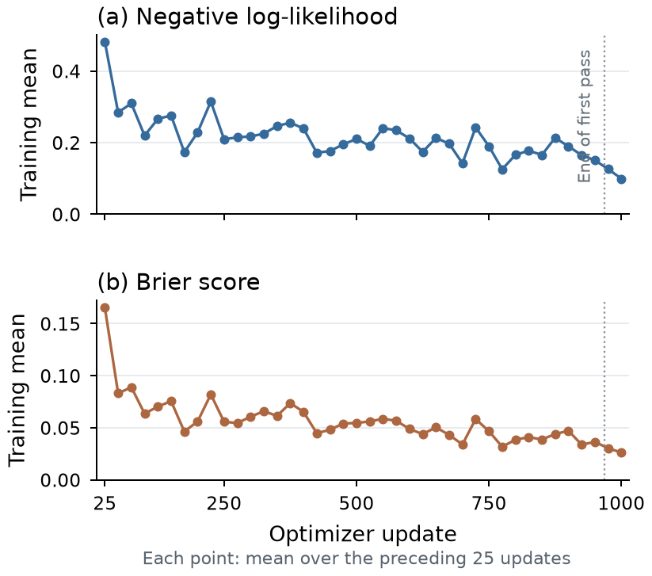

EOH
Existential Object Hallucination
A required object is absent from the image.
- 01 · Object
- Replace an object mention with an absent category.
- 02 · Association
- Introduce a plausible but absent contextual object.
Diagnosing Unsupported Grounding in MLLMs
A plausible bounding box does not mean a valid target exists. We study the gap between finding a region and understanding a reference.
“the orange in front of the apples”
Semantic illustration from the paper; not a live model prediction.
An object can be present while the requested reference is unsupported. Its color may be wrong. Its relation to another object may be reversed. A model can still commit to a region.
We call this Semantic–Spatial Mismatch. S²M-Bench separates object absence from invalid references to visible objects, and tests whether a model’s language judgments agree with its spatial outputs.
ROH has a higher direct false-grounding rate than EOH in all 13 evaluated models.
Equal-model means on the unfiltered direct-grounding task.
Each RefCOCOg image group has one supported expression and four edited negatives. Shared anchors make it possible to compare errors on the same image and target.
A required object is absent from the image.
Visible objects do not satisfy the requested constraint.

Does the complete expression have support in the image?
What does the model assert without a challenged expression?
Does the model emit a region for an unsupported reference?
Do description, support judgment, and spatial output agree?
CBR measures whether an unsupported expression receives nearly the same region as its correctly grounded positive counterpart. It isolates invalid reuse in groups where the model has already demonstrated successful positive localization.
Positive eligibility: IoU ≥ 0.5. Negative-to-positive box reuse: IoU ≥ 0.8. Refusals stay in the denominator; eligibility and positive boxes are fixed within mitigation comparisons.
ASV checks the upstream candidate against the complete expression. It keeps the original coordinates or rejects the candidate, while preserving upstream language outputs.
A task-adapted JEV-2B scorer and a frozen OmniVerifier-7B provide complementary support signals for the image, expression, and candidate box.
For supported relation types, compare the original predicate with matched alternatives on the same image and box.
The structural gate can reject additional candidates but cannot restore an earlier rejection. Accepted boxes remain unchanged.

ASV reduces the equal-model mean false-grounding rate by 40.07 percentage points, with 91.71% achieved retention of initially correct groundings.
| Strategy | Retention ↑ | mIoU ↑ |
|---|---|---|
| Unfiltered | 100.00% | 0.4268 |
| Shared support | 94.26% | 0.4011 |
| Full ASV | 91.71% | 0.3910 |
Retention is relative to originally correct positives. mIoU covers all positives, including rejected predictions.
Direct-grounding results, percentages except mIoU.
| Model | Unfiltered FGR ↓ | ASV FGR ↓ | Reduction (pp) | Retention ↑ | ASV mIoU ↑ |
|---|---|---|---|---|---|
| Qwen3-VL | 21.15 | 12.55 | 8.60 | 92.02 | 0.4265 |
| Qwen2.5-VL | 34.50 | 17.35 | 17.15 | 90.91 | 0.4248 |
| InternVL3.5 | 61.25 | 23.35 | 37.90 | 91.88 | 0.4281 |
| LLaVA-OV | 33.65 | 16.75 | 16.90 | 90.32 | 0.3032 |
| LENS | 94.20 | 23.15 | 71.05 | 91.94 | 0.4461 |
| Orsta | 44.15 | 16.90 | 27.25 | 90.73 | 0.2834 |
| Seg-R1 | 61.75 | 20.25 | 41.50 | 92.72 | 0.4596 |
| Seg-Zero | 97.10 | 22.40 | 74.70 | 91.64 | 0.4754 |
| TreeVGR | 75.60 | 19.45 | 56.15 | 90.08 | 0.2551 |
| UniVG-R1 | 99.80 | 22.85 | 76.95 | 93.70 | 0.4607 |
| Vision-R1 | 37.80 | 18.05 | 19.75 | 91.89 | 0.2874 |
| VisionReasoner | 80.85 | 22.05 | 58.80 | 92.49 | 0.4564 |
| Visual-RFT | 28.25 | 13.95 | 14.30 | 91.94 | 0.3761 |
Showing 13 models
Family labels follow the manuscript. These are descriptive comparisons across the evaluated systems, not controlled estimates of an RL effect. Unfiltered FGR is the equal-weight average of the reported EOH and ROH strata, each containing 2,000 negative queries.
JEV uses 2,000 images and 16,000 candidate–expression records, with 1,000 optimizer updates. The curve reports NLL and Brier means over 25-update windows.
The 512 temperature-fitting records form a record-level holdout; their 461 images also occur in training records. No checkpoint-wise image-disjoint validation curve was recorded, and the adaptation–benchmark image intersection remains unaudited.
The separate exploratory GRPO study is documented in the appendix; its reward curves are distinct from the scalar-head JEV training used by ASV.
Download JEV curve values ↓
The manuscript contains the complete protocol, prompts, representative QA pairs, extended evaluations, training settings, and ablations.
Methods, benchmark results, and the complete appendix.
PDF · APPENDIXMotivation, benchmark protocols, extended evaluations, and mitigation details.
CSV · REPORTED RESULTSThe 13-model results used in this page, extracted from the manuscript tables.
This page accompanies the anonymous manuscript. Project-page source on GitHub ↗ · Model code and benchmark downloads are not included in this release.